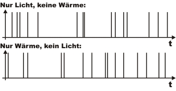

Grundlagen Kapitel 1:
Fehlvorstellung mit abgeschwächtem Laser
In physikalischen Praktika, bei Lehrmittelfirmen und in vielen Büchern findet man Versuche, die angeblich das Verhalten von einzelnen Photonen als Quantenobjekte zeigen. In diesem Kapitel wird erläutert, warum durch abgeschwächtes Laserlicht keine Einzelphotonenzustände erzeugt werden können. Die Theorie wird dabei durch qualitative und experimentelle Aspekte untermauert. Am Ende dieser Seite sollten Sie überzeugt sein, das Experimente mit abgeschwächten Lasern keine Experimente mit einzelnen Photonen sind. Wie Einzelphotonenzustände experimentell erzeugt werden können, wird im nächsten Kapitel diskutiert.
Weit verbreitete Fehlvorstellung:
Bei Experimenten mit abgeschwächtem Licht wird ein Laserstrahl so stark mit Filtern abgeschwächt, bis nur noch einzelne Lichtportionen vorhanden sind. Für die Registrierung dieser Portionen werden Detektoren verwendet, die in der Lage sind einzelne Photonen nachzuweisen (Abb. 1). Um die Quantennatur von einzelnen Photonen experimentell zu zeigen werden mit diesem abgeschwächtem Laserlicht Interferometer, Quantenradierer oder Doppelspaltversuche [Tea08] aufgebaut.
Abb. 1: Abschwächung von Laserlicht
Die etablierte wissenschaftliche Erklärung für solche Experimente mit abgeschwächtem Licht kommt jedoch komplett ohne Quantenphysik aus: Eine klassische elektromagnetische Welle regt einen klassischen binären Detektor an [Lou00], [Fox06]. Die Experimente geben wie alle anderen bisher erwähnten Experimente höchstens einen Hinweis auf die Quantennatur des Lichts - zur Erklärung wird das Photon als Quantenobjekt nicht benötigt.
Die Experimente können überspitzt gesagt auch mit einer normalen Kerze durchgeführt werden - das experimentelle Ergebnis wäre das gleiche. Das Licht einer Kerze ist absolut klassisch und hat nichts mit der Quantenphysik von Licht zu tun. Genauso wie bei einer Kerze zeigen Experimente mit abgeschwächtem Licht nicht die Quantennatur von Licht.
Eine Detektion des Detektors muss kein Photon gewesen sein:
Im folgendem soll das wissenschaftlich fundierte Argument "Experimente mit abgeschwächtem Licht sind keine Experimente zur Quantennatur von Licht" qualitativ untermauert werden: Das Auslösen eines Detektors für einzelne Photonen ("klick") wird gelegentlich als Nachweis für die Existenz des Photons interpretiert. Dieser Schluss ist jedoch nicht zulässig. In der Theorie ist das diskrete Auslösen eines Detektors kompatibel mit der Anregung durch eine klassische elektromagnetische Welle. Im realen Experiment besitzt jeder Detektor für einzelne Photonen ein Dunkelrauschen. Dunkelrauschen bedeutet, dass der Detektor in absoluter Dunkelheit etwas registriert, obwohl kein Photon vorhanden war. Das Dunkelrauschen wird durch Wärme ausgelöst. Im Experiment überlagern sich die Ereignisse des Dunkelrauschens mit den "echten" Photonenereignissen. Anhand eines "klicks" des Detektors (Abb. 2) kann nicht unterschieden werden, ob es sich um ein Photon oder um ein Dunkelrauschereignis handelt. Wenn behauptet wird, ein "klick" wäre ein Photon, dann müsste auch behauptet werden ein "klick" wäre ein Wärmequant.

Abb. 2: Detektionen eines Detektors für einzelne Photonen:
Kein Beweis für ein Wärmequant oder ein Lichtquant.
Das Experiment mit abgeschwächtem Licht ist als interaktives Bildschirmexperiment verfügbar. Die Daten des Detektors werden kontinuierlich über einen Zähler oder über das Oszilloskop ausgewertet. Führen Sie das Experiment mit verschiedenen Filtern durch. Bei welcher Einstellung ist nur das Dunkelrauschen vorhanden? Bei welchen Einstellungen überlagert sich das Dunkelrauschen mit der Anregung des Detektors durch Licht? Zur richtigen Darstellung wird der neuste Flash-Player (Version 9 - Freeware) benötigt [Download].
Beobachtung und Erklärung:
Bei Position 2) ist der Laser ausgeschaltet und das Sichtfenster des Detektors ist zusätzlich mit einer schwarzen Karte abgedeckt. Die Laborbeleuchtung erfolgt mit LED Lampen, deren Wellenlänge unter 750nm liegt. Für den Detektor ist es somit absolut dunkel. Trotzdem registriert der Detektor Ereignisse. Dies ist das sogenannte Dunkelrauschen. In Position 3) ist der Laser ziemlich stark abgeschwächt. Die Dunkelrauschereignisse überlagern sich mit den Laserereignissen. Es kann nicht unterschieden werden, welches Ereignis zu welchem physikalischen Prozess gehört. In Position 4) und 5) ist der Laser weniger stark abgeschwächt. Die Laserereignisse nehmen deutlich zu. Weniger stark abgeschwächtes Laserlicht enthält nach der Poissonstatistik (Abb. 3) aber zwei und drei Photonenanteile. Hier kann nicht mehr von einzelnen Photonen gesprochen werden.
Die Photonenstatistik von abgeschwächtem Licht:
Das wissenschaftlich fundierte Argument "Experimente mit abgeschwächtem Licht sind keine Experimente zur Quantennatur von Licht" kann mit der Photonenstatistik qualitativ untermauert werden: Eine Photonenstatistik sagt aus, welche Photonenanteile n in einem Lichtpuls enthalten sind.
Das Licht eines Lasers kann mit einer elektromagnetischen Welle und der Poissonstatistik beschrieben werden. Die Poissonstatistik hängt von der mittleren Photonenzahl <n> ab. Abgeschwächtes Laserlicht enthält z. B. die mittlere Photonenzahl von <n>=1 (Abb. 3 links). Deutlich sind in der Statistik Photonenanteile mit n=0, n=2, n=3, n=4 zu erkennen. Das Licht besteht aus einer Superposition der photonischen Zustände n=0...n=5.
Für quantenoptische Experimente sollen nur reine photonische Zustände mit n=1 vorhanden sein. Das Laserlicht mit <n>=1 kann noch stärker abgeschwächt werden. Die mittlere Photonenzahl in Abbildung 3 mitte beträgt nur noch <n>=0,1. Es sind Immer noch Photonenanteile mit n=2 vorhanden. Somit muss noch stärker abgeschwächt werden (Abb. 4 links). Im Licht sind kaum mehr Photonenanteile mit n=2, dafür aber fast nur noch Photonenanteile mit n=0 zu 99,9% vorhanden. Die Photonenzahl n=0 bedeutet Vakuum - also "nichts". Experimente mit 99,9% "nichts" machen aber keinen Sinn. Das Licht kann trotz dieser starken Abschwächung immer noch mit der Poissonstatistik - d. h. als klassische elektromagnetische Welle beschrieben werden.
Das Ziel ist eine Photonenquelle, die mit 100% Wahrscheinlichkeit zu festen Zeiten nur Pulse genau mit der Photonenzahl n=1 aussendet (Abb. 4 rechts). Eine solche Statistik kann nicht mit abgeschwächten Lasern erreicht und auch nicht mehr klassisch beschrieben werden. Alle Experimente auf der Homepage nutzen eine solche nichtklassische Einzelphotonenquelle. Der Aufbau der Quelle mit einer solchen Statistik wird im nächsten Kapitel erläutert. Das Verfahren zur experimentellen Aufnahme der abgebildeten Photonenstatistiken wird im Abschnitt Existenz des Photons bis n=2 und im Abschnitt Photonenstatistik bis zu n=8 erklärt.
Abb. 3: Photonenstatistik von abgeschwächtem Licht
links: <n>=1; mitte: <n>=0,4; rechts: <n>=0,1
Abb. 4 links: abgeschwächtes Licht mit <n>=0,01
rechts: Einzelphotonenquelle für die Experimente
Zum Kapitel 2: Angekündigte Einzelphotonenquelle [klick]
Zurück zur Übersicht [klick]
Autor: P. Bronner, April 2008